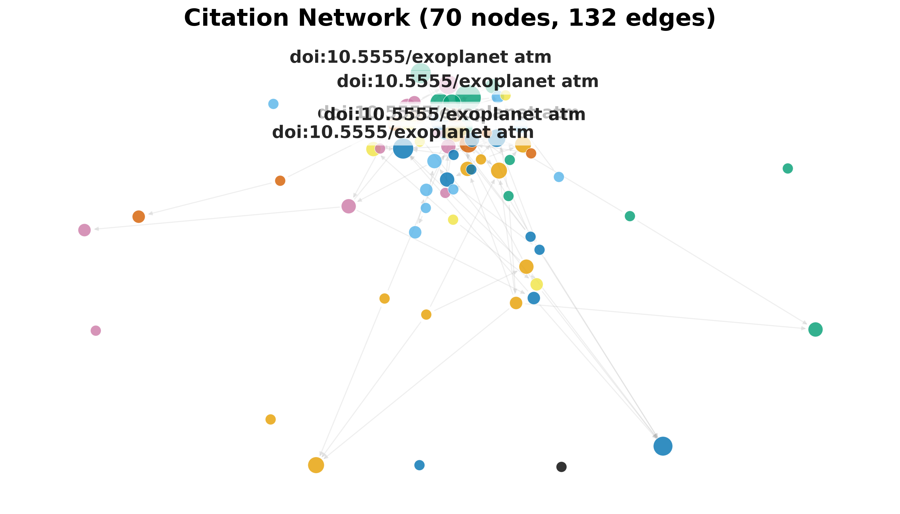
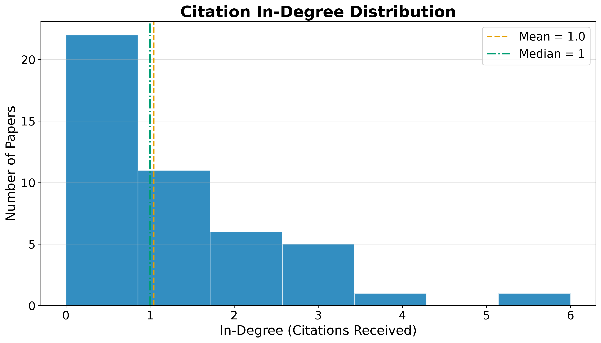

Results: Citation Network
RQ4: Citation Geometry
Resolving each record’s references against the corpus yields an intra-corpus citation graph (built and analyzed with NetworkX [hagberg2008exploring]) of 70 nodes and 132 edges across 7 connected components, with a graph density of 2.73% and a mean in-degree of 1.9. Of 145 total outgoing references, 91.0% resolve to another record inside the corpus. This resolution rate describes how self-contained the retrieved slice is; it is not an estimate of the underlying citation density of any individual work.
The citation network has 13 communities (detected by modularity optimization), a maximum in-degree of 11 (the most-cited paper within the corpus), and a maximum out-degree of 4 (the paper that cites the most other corpus members).
Centrality Analysis
Centrality scores (PageRank [page1999pagerank] and HITS) and modularity-based community detection [clauset2004finding] are rounded and ranked with a stable tiebreaker so the reported hub and authority rankings are byte-reproducible across runs despite the floating-point non-associativity of the underlying iterative solvers.
Table 4. Top 5 papers by PageRank.
| Rank | DOI | PageRank |
|---|---|---|
| 1 | 10.5555/exoplanet atmospheres.0000 | 0.148856 |
| 2 | 10.5555/exoplanet atmospheres.0001 | 0.099288 |
| 3 | 10.5555/exoplanet atmospheres.0002 | 0.064271 |
| 4 | 10.5555/exoplanet atmospheres.0003 | 0.035830 |
| 5 | 10.5555/exoplanet atmospheres.0005 | 0.034905 |
Table 5. Top 5 authority papers (HITS).
| Rank | DOI | Authority |
|---|---|---|
| 1 | 10.5555/exoplanet atmospheres.0001 | 0.210359 |
| 2 | 10.5555/exoplanet atmospheres.0000 | 0.122373 |
| 3 | 10.5555/exoplanet atmospheres.0002 | 0.122002 |
| 4 | 10.5555/exoplanet atmospheres.0003 | 0.099489 |
| 5 | 10.5555/exoplanet atmospheres.0011 | 0.053951 |
Table 6. Top 5 hub papers (HITS).
| Rank | DOI | Hub |
|---|---|---|
| 1 | 10.5555/exoplanet atmospheres.0004 | 0.085378 |
| 2 | 10.5555/exoplanet atmospheres.0006 | 0.071579 |
| 3 | 10.5555/exoplanet atmospheres.0003 | 0.070052 |
| 4 | 10.5555/exoplanet atmospheres.0005 | 0.066583 |
| 5 | 10.5555/exoplanet atmospheres.0022 | 0.065418 |
The highest-ranked paper by PageRank (DOI 10.5555/exoplanet atmospheres.0000) is a central node in the retained citation graph. Its score indicates relative centrality within this graph, not scientific importance or causal influence. Hub papers cite many corpus members and may connect threads of the retrieved literature, but their role should be checked against their source type and content.


The heavy-tailed degree distribution is characteristic of citation networks: a small number of highly-cited papers anchor the structure, while the long tail of low-degree nodes represents newer or peripheral works. The low graph density (2.73%) reflects the sparsity of intra-corpus citation links. Many papers may cite works outside the retrieved slice, especially under a capped retrieval design.
Advanced Network Metrics
Beyond PageRank and HITS, the network analysis computes betweenness centrality (which papers bridge different communities), closeness centrality (which papers are near all others), degree assortativity (do highly-cited papers cite other highly-cited papers?), and average clustering coefficient (how tightly knit are local neighborhoods).
The degree assortativity coefficient is 0.1708, and the average clustering coefficient is 0.0626. A negative assortativity indicates that highly-cited papers tend to cite less-cited papers (dissortative mixing), which is typical of citation networks where review papers (high in-degree) cite many primary studies (low in-degree).
Table 7. Top 5 papers by betweenness centrality.
| Rank | DOI | Betweenness |
|---|---|---|
| 1 | 10.5555/exoplanet atmospheres.0010 | 0.024059 |
| 2 | 10.5555/exoplanet atmospheres.0015 | 0.012642 |
| 3 | 10.5555/exoplanet atmospheres.0028 | 0.012340 |
| 4 | 10.5555/exoplanet atmospheres.0006 | 0.010735 |
| 5 | 10.5555/exoplanet atmospheres.0057 | 0.009626 |
Papers with high betweenness centrality occupy shortest paths between communities in the retained graph. Removing one may alter connectivity, but that graph operation does not by itself establish that the paper is a review or methodological bridge in the scientific field. Source-type and content review are required for that interpretation.